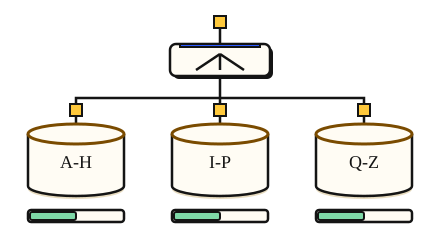

Scale the data · 3 minutes
Splitting data
When one database cannot take the writes, split the data across several.
Open this lesson
One database has a ceiling
A single database can only take so many writes, and replicas do not help. Sharding splits the data by a key, such as user id, so each shard holds a slice and takes only its share of writes.
Choosing the key
A partition field decides which records must stay together. Compare user ids with a country that holds most users.
Try the idea
Writes are far above what one database can do. Swap it for a sharded database.
Key numbers
- One SQL primary
- ≈ 2,000 writes a second. approx.
- Four shards
- ≈ 8,000 writes a second. if the key spreads evenly, approx.
- Moving data to add shards
- hours to days. plan ahead, approx.
Check your reasoning
Think through these questions before opening the lesson. In the game you can test the idea and compare your reasoning.
- Sharding mainly helps with:
- Which is the best shard key?
- What gets harder after sharding?
The key point
Shard when writes or size outgrow one machine, and pick a key that spreads evenly.
Practise this idea
- Hard
Object storage service
Customers store billions of files, from tiny pictures to huge videos, and fetch them by name. The service must never lose a file, scale without a limit and stay cheap. Most files are written once and rarely read again.
- Hard
Ride-hailing dispatch
You run dispatch for a big metro area. About 100,000 drivers send a position every 4 seconds, and riders ask for cars near them. When a stadium empties, thousands of riders ask for a car from the same few blocks at the same moment. Match riders to drivers fast, and never charge a trip twice.
- Hard
Metrics platform
Thousands of services send a stream of measurements: CPU, errors, latency. You store them, draw the dashboards and fire the alerts. The platform watching everyone else must never go down first, and one customer creating millions of new series can ruin the bill.